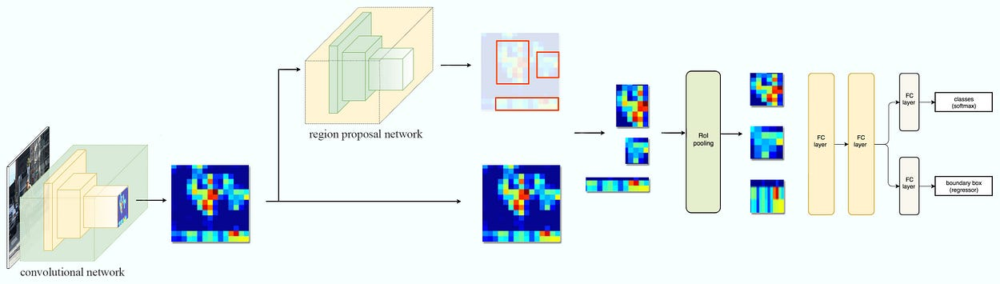
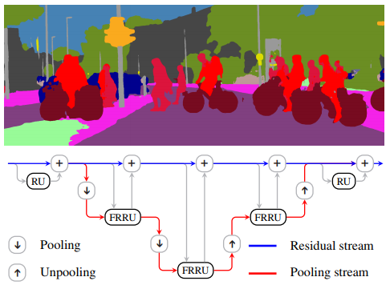
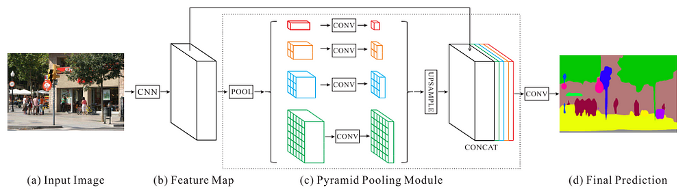
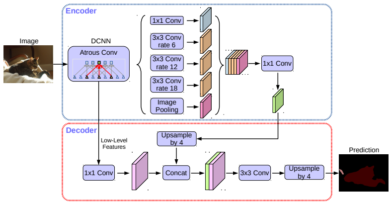
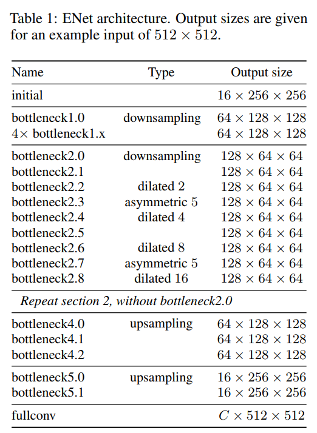
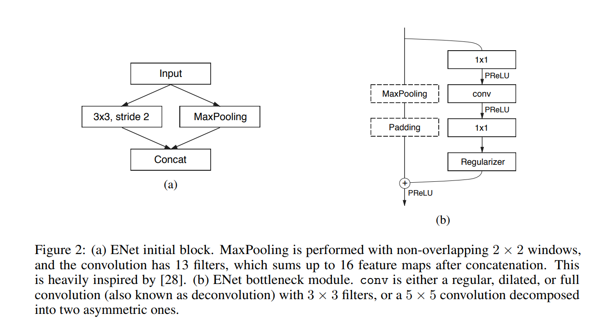

Post: Real-Time Semantic Segmentation
#ENet model implementation In this blog I will present an overview on image segmentation and the reproduction of ENet paper.
Link to the paper: https://arxiv.org/pdf/1606.02147.pdf
Link to the repository: https://github.com/iArunava/ENet-Real-Time-Semantic-Segmentation
Image Segmentation Overview
In computer vision, image segmentation is the process of partitioning a digital image into multiple segments (sets of pixels, also known as super-pixels). The goal of segmentation is to simplify and/or change the representation of an image into something that is more meaningful and easier to analyze. Image segmentation is typically used to locate objects and boundaries (lines, curves, etc.) in images. More precisely, image segmentation is the process of assigning a label to every pixel in an image such that pixels with the same label share certain characteristics. There are various techniques in the field of image segmentation:
- Region based segmentation
- Edge detection segmentation
- Segmentation based on clustering
Classical Approaches to Image Segmentation
In the past, various algorithms were proposed to perform image segmentation, and these are:
-
Thresholding technique - the main objective of technique is to determine an optimal threshold value of an image. The pixels whose intensity values exceed the threshold value are transformed to 1 and the others to 0 creating a binary image. methods to select the threshold value: Otsu, K-means clustering and maximum entropy.
-
Motion and interactive segmentation - this technique is based on motion in the image to perform the segmentation. The idea is intuitive, check the differences between pair of images assuming the object is moving, the difference will be exactly that object.
-
Edge detection - includes a variety of mathematical methods that aim at identifying points in a digital image at which the image brightness changes sharply or, more formally, has discontinuities. the correlation between region boundaries and edges is high, therefore usually edge detection is used as the base of another segmentation technique.
-
Region-growing methods - rely mainly on the assumption that the neighboring pixels within one region have similar values. The common procedure is to compare one pixel with its neighbors. If a similarity criterion is satisfied, the pixel can be set to belong to the cluster as one or more of its neighbors. The selection of the similarity criterion is significant, and the results are influenced by noise in all instances.
There are more methods didn’t mentioned above used for image segmentation such as: dual clustering, fast marching, watershed transformation and more.
Deep Learning Models for Image Segmentation
UNet - The u-net is convolutional network architecture for fast and precise segmentation of images. Up to now it has outperformed the prior best method (a sliding-window convolutional network) on the ISBI challenge for segmentation of neuronal structures in electron microscopic stacks. It has won the Grand Challenge for Computer-Automated Detection of Caries in Bitewing Radiography at ISBI 2015, and it has won the Cell Tracking Challenge at ISBI 2015 on the two most challenging transmitted light microscopy categories (Phase contrast and DIC microscopy) by a large margin (See also our announcement).

SegNet - SegNet is assembled from encoders and decoders but without fully connected layers. SegNet is a fully convolutional network (FCN) with 13 VGG16 convolutional layers.

Mask R-CNN - Faster R-CNN uses a CNN feature extractor to extract image features. Then it uses a CNN region proposal network to create region of interests (RoIs). We apply RoI pooling to warp them into fixed dimension. It is then feed into fully connected layers to make classification and boundary box prediction.

Full-Resolution Residual Networks (FRRN) - FRRN uses additional processing steps must be performed in order to obtain pixel-accurate segmentation masks at the full image resolution.

Pyramid Scene Parsing Network (PSPNet) - Full-Resolution Residual Networks were really computationally intensive and using them on full scale photos was really slow. In order to deal with this problem PSPNet applies 4 different max pooling operation with 4 different window sizes and strides. Using the max pooling layers able to extract feature information from different scales much more efficiently.

DeepLabv3+ - former networks are able to encode multi scale contextual information by using filters and pooling operations in different rates. newer networks can capture sharper object boundaries by recovering the spatial information. DeepLabv3+ combines these two approaches. DeepLabv3+ uses both encoder decoder and spatial pyramid pooling modules.

ENet Implementation
ENet (Efficient Neural Network) gives the ability to perform pixel-wise semantic segmentation in real-time. ENet is upto 18x faster, requires 75x less FLOPs, has 79x less parameters and provides similar or better accuracy to existing models (according to 2016). Tested on CamVid, CityScapes and SUN datasets.

The model architechture consists of inital block and five bottlenecks. The first three bottlenecks are used for encoding the input image and the other two for decoding it.
Each bottleneck module consists of:
- 1x1 projection that reduces the dimensionality
- A main convolution layer (
conv) (either — regular, dilated or full) (3x3) - 1x1 expansion
- and they place Batch Normalization and PReLU between all convolutional layers.
If the bottleneck is downsampling, a max pooling layer is added to the main branch. Also, the first 1x1 projection is replaced with 2x2 convolution with stride=2.
They zero pad the activations to match the number of feature maps.
The conv is sometimes asymmetric convolution i.e. a sequence of 5 * 1 and 1 * 5 convolutions.
For the regularizer they use Spatial Dropout:
- with p = 0.01 before bottleneck2.0
- with p = 0.1 afterwards

Enet model Results


If you want to train ENet model and reproduce the results in one go you can open the notebook at this link and run it. No downloads needed just run and enjoy!
If you liked it, don’t forget to clap, star and fork the project!
https://github.com/iArunava/ENet-Real-Time-Semantic-Segmentation